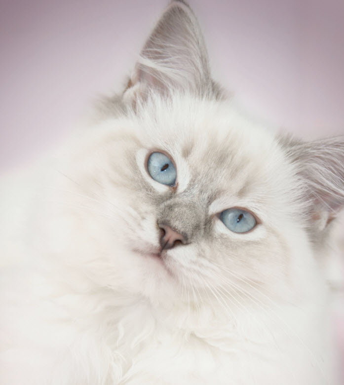

The Ragdoll is a cat breed with a color point coat and blue eyes. They are large and muscular semi-longhair cat with a soft and silky coat. Developed by American breeder Ann Baker in the 1960s, they are best known for their docile and placid temperament and affectionate nature.
 Back